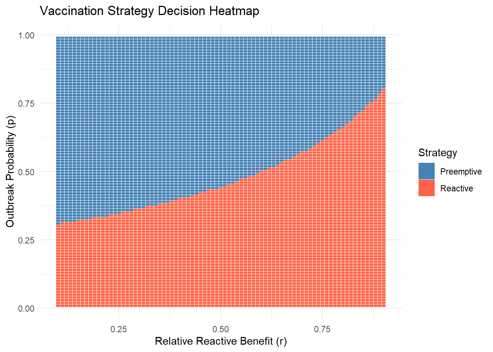

Code
import sympy as sp
# Define symbols
B, C, p, r = sp.symbols('B C p r', positive=True)
# Net benefits
net_pre = B*p - C
net_react = B*p*r - C*p
# When is pre-emptive better?
threshold_p = sp.solve(net_pre - net_react > 0, p)When managing infectious disease risks such as cholera, limited vaccine supply often forces decision-makers to choose between pre-emptive and reactive vaccination campaigns. This post explores a cost-benefit model comparing the two strategies using analytical expressions and numerical simulations.
We aim to answer: Under what conditions is it better to vaccinate before an outbreak occurs, and when is it more beneficial to wait and respond reactively?
Let:
If we vaccinate before any outbreak, the expected benefit is \(B \cdot p\). However, we always incur the campaign cost \(C\), so the net expected benefit is:
\[ \text{Net}_{\text{pre}} = Bp - C \]
For reactive vaccination, the benefit is only realized if an outbreak occurs (probability \(p\)), and even then, only \(rB\) is saved due to delays. The cost \(C\) is only paid if an outbreak occurs. Hence:
\[ \text{Net}_{\text{react}} = Bpr - Cp \]
\[ \text{Net}_{\text{pre}} - \text{Net}_{\text{react}} = pB(1 - r) - C(1 - p) \]
Pre-emptive is better if:
\[ pB(1 - r) > C(1 - p) \]
Solving for \(p\) gives the threshold outbreak probability \(p^*\):
import sympy as sp
# Define symbols
B, C, p, r = sp.symbols('B C p r', positive=True)
# Net benefits
net_pre = B*p - C
net_react = B*p*r - C*p
# When is pre-emptive better?
threshold_p = sp.solve(net_pre - net_react > 0, p)\[ p > \frac{C}{B(1 - r) + C} \]
library(ggplot2)
library(dplyr)
# Create a grid of r and p values
r_vals <- seq(0.1, 0.9, by = 0.01)
p_vals <- seq(0.01, 0.99, by = 0.01)
B <- 1
C <- 0.4
# Compute threshold for each r
grid <- expand.grid(p = p_vals, r = r_vals)
grid <- grid %>%
mutate(p_star = C / (B * (1 - r) + C),
decision = ifelse(p > p_star, "Preemptive", "Reactive"))
# Plot heatmap
ggplot(grid, aes(x = r, y = p, fill = decision)) +
geom_tile(color = "white") +
scale_fill_manual(values = c("Preemptive" = "steelblue", "Reactive" = "tomato")) +
labs(title = "Vaccination Strategy Decision Heatmap",
x = "Relative Reactive Benefit (r)",
y = "Outbreak Probability (p)",
fill = "Strategy") +
theme_minimal()
This plot shows that reactive vaccination is better when \(p\) is small, but pre-emptive takes over beyond a break-even point that depends on \(r\).
We define two additional parameters - \(\phi\): The benefit of vaccination when no outbreak occurs (e.g., due to future immunity or prevention). This applies to both pre-emptive and reactive strategies
If we vaccinate before any outbreak, the expected benefit includes two parts:
The cost \(C\) is always incurred. So the net expected benefit is:
\[ \text{Net}_{\text{pre}} = pB + (1 - p)\phi B - C \]
Reactive benefit occurs only if an outbreak occurs. In that case:
So the net expected benefit is:
\[ \text{Net}_{\text{react}} = p(r+\phi)B - pC - (1 - p)D \]
Compare symbolically both strategies under these extended conditions.
import sympy as sp
# Define symbols
B, C, D, p, r, phi = sp.symbols('B C D p r phi', positive=True)
# Net benefits
net_pre = p*B + (1 - p)*phi*B - C
net_react = p*(r+phi)*B - p*C - (1 - p)*D
# Difference
diff = net_pre - net_react
sp.simplify(diff)-B*p*(phi + r) + B*p - B*phi*(p - 1) + C*p - C - D*(p - 1)
threshold_p = sp.solve(diff > 0, p)\[ \text{Net}_{\text{pre}} - \text{Net}_{\text{react}} = Bp(1 - r - \phi) + B(1 - p)\phi - C(1 - p) + D(1 - p) \]
Pre-emptive vaccination is better when this expression is positive. The threshold for \(p\) can be derived numerically based on values of \(B, C, D, r, \phi\).
We update the R plot to incorporate \(\phi\) and \(D\).
library(ggplot2)
library(dplyr)
B <- 1
C <- 0.5
D <- 0.02
phi <- 0.1
r_vals <- seq(0.1, 0.9, by = 0.01)
p_vals <- seq(0.01, 0.99, by = 0.01)
compute_net <- function(p, r) {
net_pre <- B * p + (1 - p) * B * phi - C
net_react <- B * p * (r + phi) - p * C - (1 - p) * D
return(data.frame(p = p, r = r,
net_pre = net_pre,
net_react = net_react))
}
# Compute threshold for each r
grid <- expand.grid(p = p_vals, r = r_vals)
grid <- grid %>%
mutate(pre = compute_net(p,r)$net_pre,
react = compute_net(p,r)$net_react,
decision = ifelse(pre > react, "Preemptive", "Reactive"))
# Plot heatmap
ggplot(grid, aes(x = r, y = p, fill = decision)) +
geom_tile(color = "white") +
scale_fill_manual(values = c("Preemptive" = "steelblue", "Reactive" = "tomato")) +
labs(title = "Vaccination Strategy Decision Heatmap",
x = "Relative Reactive Benefit (r)",
y = "Outbreak Probability (p)",
fill = "Strategy") +
theme_minimal()Let’s now generalize to \(k\) sub-populations, each with its own outbreak probability \(p_i\). We have \(m\) campaigns to deploy:
This is equivalent to choosing all sub-populations where:
\[ p_i > \frac{- \phi B+ C - D}{(1- 2 \phi - r)B + C - D} \]
We simulate 10 sub-populations with different outbreak probabilities and show how many campaigns should be used pre-emptively.
set.seed(42)
p_i <- sort(runif(10, 0.05, 0.6), decreasing = TRUE)
threshold_p <- function(B, C, r) { C / (B * (1 - r) + C) }
assign_campaigns <- function(p_i, B, C, r) {
p_star <- threshold_p(B, C, r)
preemptive <- which(p_i > p_star)
data.frame(index = 1:length(p_i), p_i = p_i,
decision = ifelse(p_i > p_star, "pre-emptive", "reactive"))
}
assign_campaigns(p_i, B = 1, C = 0.2, r = 0.6) index p_i decision
1 1 0.5653915 pre-emptive
2 2 0.5531433 pre-emptive
3 3 0.5067462 pre-emptive
4 4 0.4551236 pre-emptive
5 5 0.4377856 pre-emptive
6 6 0.4113458 pre-emptive
7 7 0.4029600 pre-emptive
8 8 0.3355028 pre-emptive
9 9 0.2073767 reactive
10 10 0.1240666 reactiveWe consider a strategic vaccination scenario where oral cholera vaccines (OCVs) are in limited supply. Specifically, the available stockpile is sufficient to cover only 10% of all subpopulations. Epidemiological data suggest that, within the anticipated time frame, fewer than 10% of subpopulations are likely to experience an outbreak. This implies that a fully reactive strategy—in which vaccines are deployed only in response to confirmed outbreaks—could, in principle, respond to all outbreaks without exceeding supply.
However, a recent risk assessment indicates that 20% of the population exceeds the outbreak probability threshold \(p^*\) above which preemptive vaccination is expected to yield greater benefit than reactive vaccination for a given region.
This raises a strategic dilemma:
Should all subpopulations above the preemptive threshold be vaccinated in advance, despite limited vaccine availability and the potential need for reactive response elsewhere?
This scenario highlights the trade-off between targeting high-risk areas proactively versus preserving flexibility to respond where outbreaks actually occur, especially under uncertainty and supply constraints. That is, we need to consider an opportunity cost of preemptive vaccination under Limited vaccine supply.
Assumptions: - You can identify top-\(k\) highest-risk regions. - You can react to up to \(M - k\) outbreaks in unvaccinated populations. - Outbreaks occur independently across regions.
Vaccinate top \(k\) high-risk regions:
\[\text{Benefit}_{\text{pre}} = \sum_{i=1}^{k} p_i B \]
Let $ k = {i=k+1}^{n} p_i $: expected number of outbreaks in unvaccinated regions.
Expected reactive benefit (up to $ M - k $ responses):
\[ \text{Benefit}_{\text{react}} = rB \cdot \min(M - k, \mu_k) \]
\[ \text{Total Benefit}_k \approx B \left( \sum_{i=1}^{k} p_i + r \cdot \min(M - k, \mu_k) \right) \]
Vaccinating region \(k+1\) preemptively: - Gain: \(p_{k+1} B\) - Lose: ability to respond reactively to one more outbreak
Opportunity cost:
\[ \text{Opportunity Cost}(k+1) = rB \cdot \mathbb{P}(X_k \ge M - k) \]
where \(X_k \sim \text{Binomial}(n - k, \bar{p}_k)\) or $(_k) $.
Preemptively vaccinate region \(i\) only if:
\[ p_i > r \cdot \mathbb{P}(\text{reactive demand exceeds remaining doses}) \]
Using Poisson approximation:
\[ \mathbb{P}(X_k \ge M - k) \approx 1 - \sum_{x=0}^{M-k-1} \frac{e^{-\mu_k} \mu_k^x}{x!} \]
So:
\[ \text{Opportunity Cost} \approx rB \left(1 - \sum_{x=0}^{M-k-1} \frac{e^{-\mu_k} \mu_k^x}{x!} \right) \]
| Quantity | Expression |
|---|---|
| Preemptive threshold | $ p^* = $ |
| Preemptive benefit (k regions) | $_{i=1}^k p_i B $ |
| Reactive expected benefit | $ rB (M-k, _k) $ |
| Total expected benefit | $ B ( _{i=1}^k p_i + r (M - k, _k) ) $ |
| Opportunity cost of dose $ k+1 $ | $ rB (X_k M - k) $ |
| Adjusted decision rule | Vaccinate if $ p_{k+1} > r (X_k M - k) $ |
# Load necessary libraries
library(ggplot2)
library(dplyr)
# Simulation parameters
set.seed(123)
n <- 100 # Total subpopulations
M <- 10 # Vaccine budget (10% of regions)
B <- 1 # Benefit of preventing an outbreak
C <- 0.4 # Cost of vaccination
r <- 0.8 # Relative reactive benefit
phi <- 0.05
D <- 0.1
# Threshold for preemptive action
p_star <- (- phi*B + C - D) / ((1- 2*phi - r)*B + C - D)
# p_star <- C / (B * (1 - r) + C)
# Generate synthetic outbreak probabilities
p_i <- sort(runif(n, 0.01, 0.5), decreasing = TRUE)
# Simulate outbreak events (Bernoulli trial based on p_i)
n_sim <- 1000
results <- data.frame()
for (k in 0:M) {
# Preemptively vaccinate top-k at-risk regions
preempt_indices <- 1:k
reactive_pool <- (k+1):n
total_cases_averted <- numeric(n_sim)
for (s in 1:n_sim) {
outbreaks <- rbinom(n, 1, p_i)
# Preemptive: full benefit if outbreak occurs
preempt_impact <- sum(outbreaks[preempt_indices]) * B
# Reactive: respond to up to (M - k) actual outbreaks in unvaccinated group
reactive_indices <- reactive_pool[outbreaks[reactive_pool] == 1]
max_reactive <- min(length(reactive_indices), M - k)
reactive_impact <- max_reactive * r * B
total_cases_averted[s] <- preempt_impact + reactive_impact
}
results <- rbind(results,
data.frame(
k_preempt = k,
mean_cases_averted = mean(total_cases_averted),
sd = sd(total_cases_averted)
))
}
# Plot
ggplot(results, aes(x = k_preempt, y = mean_cases_averted)) +
geom_line(size = 1.2) +
geom_ribbon(aes(ymin = mean_cases_averted - sd,
ymax = mean_cases_averted + sd),
fill = "skyblue", alpha = 0.3) +
labs(title = "Expected Cases Averted vs. Number of Preemptive Vaccinations",
x = "Number of Preemptive Vaccinated Regions (k)",
y = "Mean Cases Averted (with SD band)") +
theme_minimal()
When outbreak risk is high enough, pre-emptive vaccination pays off even if the outbreak doesn’t occur. When outbreak risk is low, and reactive campaigns are effective (\(r\) close to 1) and is more cost-effective. The decision threshold depends critically on the relative cost \(C\) and the delay penalty \((1 - r)\) in addition to \(p\) and \(r\)
Even under limited vaccine supply, careful cost-benefit modeling can guide whether to vaccinate early or wait. This blog post outlined a tractable analytical framework and practical tools (in Python and R) to support such decisions. Extensions could include waning immunity, spatial correlations, or dynamic outbreaks.